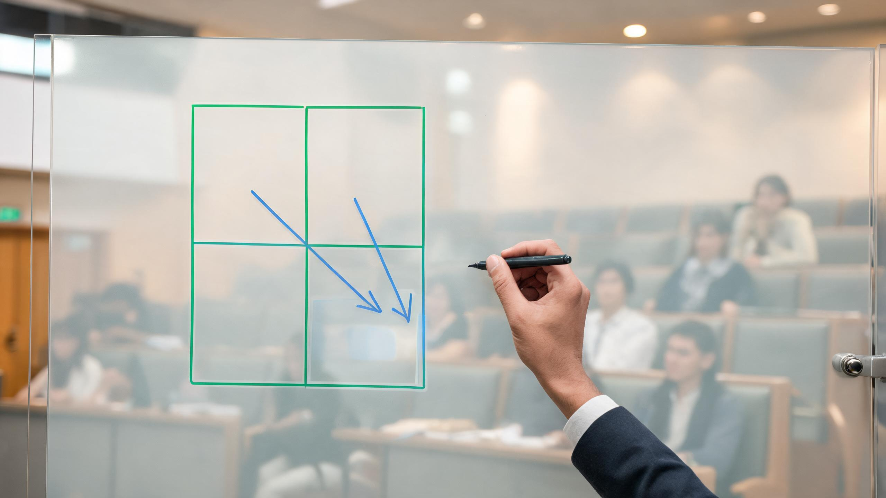

LEARNING COPILOT
从看懂视频，到真正会做题。
把 B 站视频整理成章节、考点和练习，学习到哪一步，自己心里有数。
本周学习进度
42%
你正在学习「范里安微观经济学」，下一步是完成完全信息静态博弈的练习。
已完成 5 个知识点共 12 个
继续学习
从上次离开的地方继续。

进行中
完全信息静态博弈（一）
需求
已完成
预算约束与消费者选择
今日复习
用几分钟巩固薄弱点。
3
3 个知识点
纳什均衡与最优回应的区别
如何从收益矩阵找到占优策略
完全信息静态博弈的三个要素
START LEARNING
导入视频，选择你的学习目标
粘贴 B 站链接，告诉学搭子你现在最需要什么，内容和练习会按目标准备。
当前已载入这集微观经济学课程示例，识别后可以直接开始学习。
识别成功 · 第 28/51 集
【博弈论】完全信息静态博弈（一）
微观经济学博弈论快速理解
这次你想完成什么？
快速理解 · 先搭起这章的概念骨架生成概念讲解、完整矩阵例子和思维导图，先搞清楚最佳回应和纳什均衡怎么连起来。
正在整理这节课
识别视频标题和课程信息
提取字幕并切分学习章节
建立知识点之间的关系
生成练习题和复习卡片
YOUR LEARNING MAP
这节课已经准备好了
先看懂全局，再进入视频学习。你可以随时回到这里重新查看课程结构。
快速理解模式
完全信息静态博弈（一）
学完这节课，你应该能回答
01完全信息静态博弈由哪些要素构成？
02如何从收益矩阵中找到参与者的最优回应？
03什么情况下，一个策略组合可以称为纳什均衡？
知识结构
基础概念
分析工具
核心结论
建议学习顺序
1
建立概念地图先理解博弈中的角色和规则
2
跟着视频看案例在关键时间点停下来提问
3
完成一题收益矩阵用练习确认是否真的理解
本次学习会生成
3 分钟速览知识地图AI 问答
完全信息静态博弈（一）
范里安微观经济学 · 第 28/51 集 · 快速理解模式当前章节：完全信息静态博弈。重点观察参与者、策略、收益如何共同决定最优回应。
当前章节 · 完全信息静态博弈
本节核心问题
每个参与者都清楚博弈的规则、其他人的可选策略和最终收益，并且大家同时做出选择。我们要做的，是找到在别人策略不变时，对自己最有利的回应。
参与者
谁在做决策？每个人的目标是什么？
谁在做决策？每个人的目标是什么？
策略
每个人有哪些可以选择的行动？
每个人有哪些可以选择的行动？
收益
不同策略组合会带来什么结果？
不同策略组合会带来什么结果？
本章进度
31%
第 1 关 / 3
来，看看你能不能过第二关。
在下面这个收益矩阵中，如果参与者 B 选择「左」，参与者 A 的最优回应是什么？
| A \ B | 左 | 右 |
|---|---|---|
| 参与者 B 的策略 | ||
| 上 | 3, 2 | 1, 1 |
| 下 | 2, 1 | 4, 3 |
✓
LEARNING SESSION COMPLETE
你已经完成这节课的第一轮学习
系统已经把你的薄弱点整理成复习任务，下一次打开时可以直接从这里继续。
3已掌握知识点
1待复习知识点
80%本次练习正确率
为你生成的复习卡片
下一次复习时，先回答这个问题。
?为什么纳什均衡要求“没有人愿意单独改变策略”？
YOUR KNOWLEDGE BASE
知识库
把看过的视频变成可以反复调用的知识。
最近收藏
按课程和知识点整理。
微观经济学
完全信息静态博弈：纳什均衡
知识结构
你已经从这门课建立了 12 个关联知识点。
MY COURSES
我的课程
所有通过视频生成的学习内容，都在这里继续。
进行中
完全信息静态博弈（一）
消费者选择
已完成
预算约束与消费者选择
SPACED REVIEW
待复习
先处理最容易忘记、也最值得重新理解的知识点。
3
今天复习 3 个知识点
纳什均衡与最优回应的区别
如何从收益矩阵找到占优策略
完全信息静态博弈的三个要素